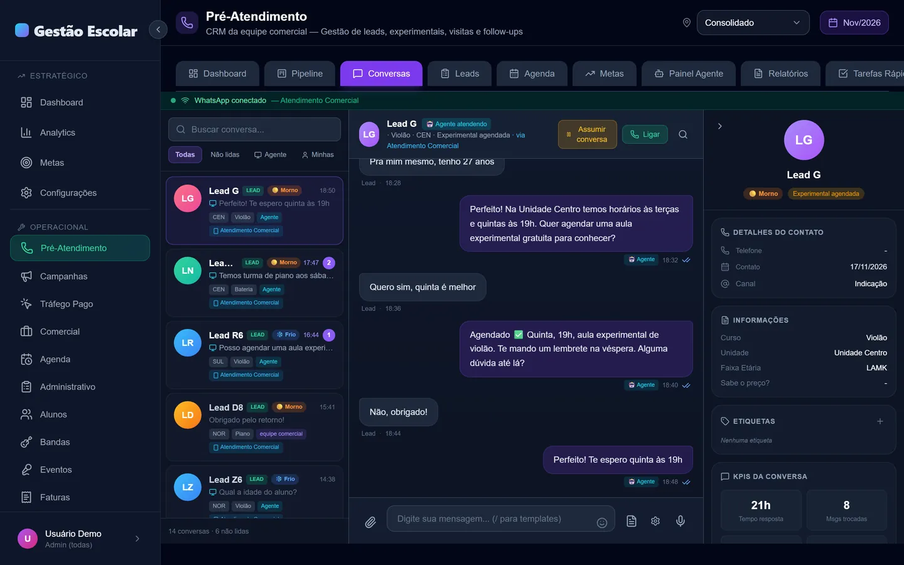

agentes de IA
Plataforma de agentes de IA para atendimento comercial e marketing
Agentes que atendem leads e acompanham as promessas feitas na conversa, para que nenhum retorno combinado fique esquecido.
- >250promessas sob vigia
- >170avaliações classificadas
- >100respostas a avaliações
- ~60%dos leads estavam ocultos por um limite; corrigido
atendimento · conversasdados fictícios
